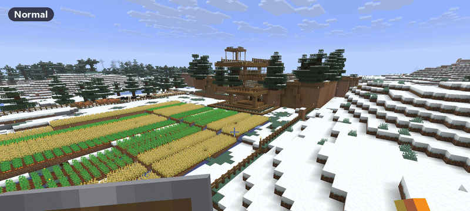
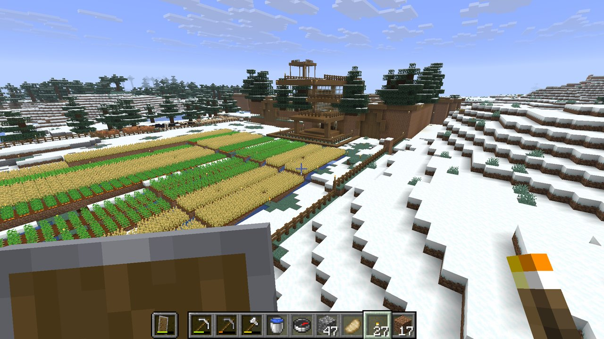
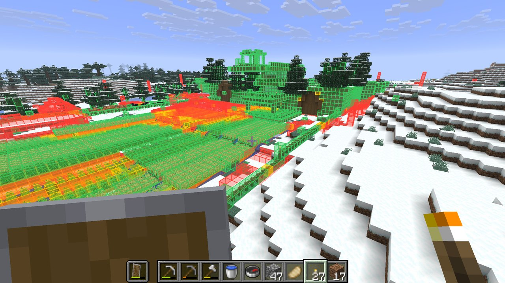
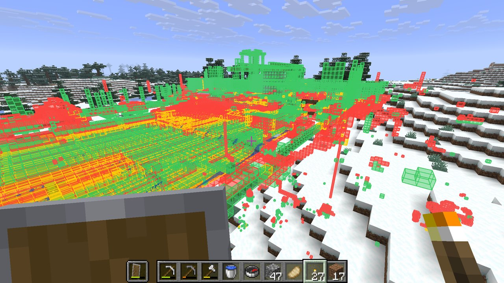
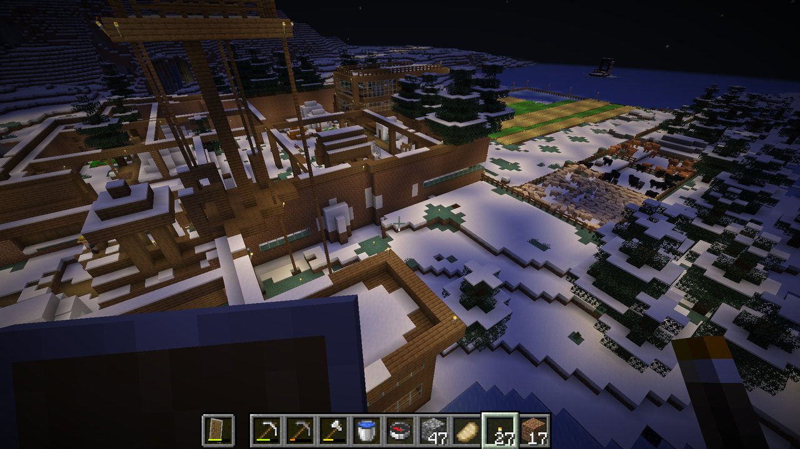
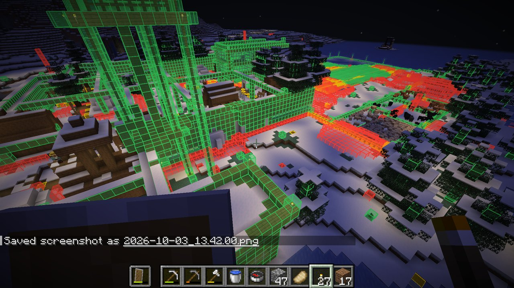
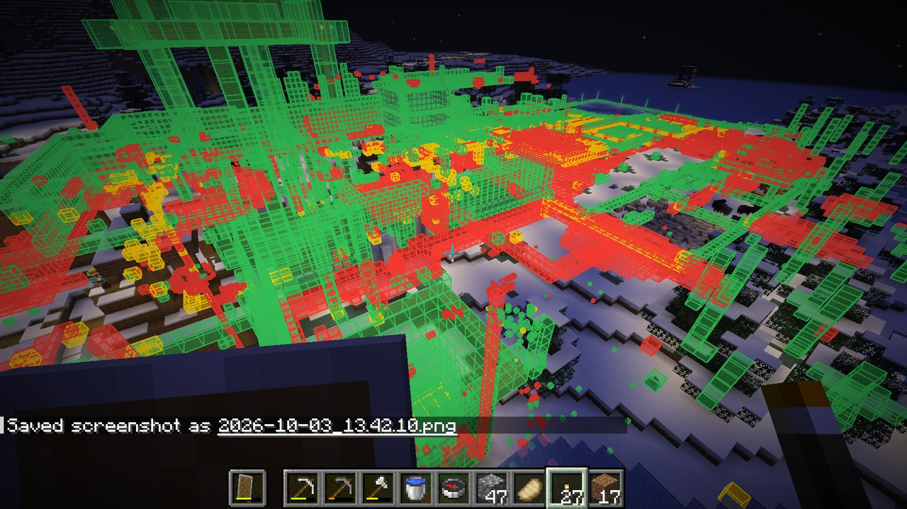

mc-diff
See what you changed in your Minecraft world.

Download
Needs Fabric Loader and Fabric API for the version you pick. Put Fabric API and the mc-diff jar in your mods folder. It only needs to be on your client, including when you play on servers.
What it shows
- Red a block that was there originally and is now gone (dug out, cut down, blown up)
- Green a block where there was nothing originally (things you built)
- Yellow a block that was replaced by a different one
Things that change on their own are left out: liquids, fire, ice, snow layers, leaves, grass tufts, flowers, mushrooms, vines and other creeping plants. Block states are ignored too, so opening a door or a crop growing doesn't count.
Screenshots






X-ray shows changes through terrain, which is where all the old mining tunnels and cave bridges turn up.
How it works
The first time your client sees a chunk, the mod saves a compact snapshot of its blocks. Brand-new chunks are seen right after generation, so in a new world the baseline is untouched terrain. After that, every chunk is compared against its snapshot.
For a world that existed before you installed the mod, /mcdiff original regenerates every saved chunk from the world's seed in a temporary hidden dimension and uses that as the baseline. Your real chunks are never modified. It only works if the world was generated on the Minecraft version you're playing now.
Commands
/mcdiff | Show or hide the diff |
/mcdiff xray | See changes through terrain |
/mcdiff range <chunks> | How far away changes are drawn (default 8 chunks) |
/mcdiff stats | Totals for the dimension and the most removed and placed blocks |
/mcdiff original | Rebuild the baseline from the world's seed (singleplayer only) |
/mcdiff original stop | Pause a rebuild; running the command again continues it |